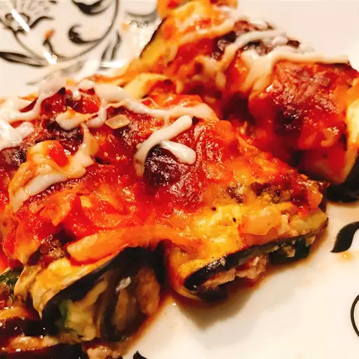

Chicken Eggplant Rollatini

Description:
A deliciously decieving non-decadent dish of savory italian splendor to spoil your pallete and maybe a special someone. Dressed with cheese to impress and please this eggplant rollatini will tick all the boxes.
Ingredients
- 2 eggplants
- Salt
- Extra virgin olive oil I used Private Reserve Greek EVOO
- 2 cups Store-bought Marinara sauce Or homemade pasta sauce
For Filling
- 2 eggs beaten
- 1 cup part-skim ricotta cheese
- ½ cup part-skim shredded Mozzarella more for later
- 3 tablespoon grated Parmesan
- 2 tablespoon basil pesto homemade or store-bought, more for later
- 1 cup chopped fresh parsley leaves
Steps
- Slice eggplants length-wise into ¼-inch thin slices (it's easier to do this using a mandolin slicer like this one. affiliate link) You should have about 12 slices of similar size (reserve end pieces that are shorter or odd-shaped for another use).
- Sprinkle eggplant slices with salt and set aside on paper towel for 20 minutes. This will help the eggplant sweat out any bitterness. Pat dry. Rinse with water, then dry again.
- Eggplant sprinkled with salt
- Heat oven to 375 degrees F.
- Brush a large baking sheet with extra virgin olive oil. Arrange eggplant slices in one layer on baking sheet. Brush the tops of the eggplant slices with more extra virgin olive oil. Bake in heated oven for 8 minutes or so until soft enough to fold (do not overcook.) Remove from oven and set aside briefly to cool. (Leave the oven on for the rollatini)
- Meanwhile, prepare the filling. In a bowl, add eggs, ricotta, Mozzarella, grated Parmesan, basil pesto, and fresh parsley. Mix until well-combined.
- ricotta filling for eggplant rollatini
- Spread about ¾ cup marinara sauce on the bottom of a 9 ½" x 13" baking dish.
- Spoon about 2 tablespoon of the filling onto one end of each eggplant slice, and spread. Starting from the short end, roll up eggplant slices tightly and arranged on prepared baking dish.
- eggplant roll ups arranged in baking dish
- Top eggplant rollatini with the remainder of the marinara sauce, more basil pesto, and a sprinkle of mozzarella. Bake in heated oven for 30 minutes or until the eggplant rollatini are fully cooked and tender.
- eggplant roll ups topped with sauce and mozzarella cheese
- Remove from oven and let sit for 10 minutes or so before serving.